Briefly explain de Casteljau's algorithm and how you implemented it in order to evaluate Bezier curves.
De Casteljau's algorithm is an algorithm that recursively approximate polynomials given several points so that the final output is smooth. In the lecture, the formula for the algorithm is defined as:
Here, we deem the t as the proportion of the edge that the point is going through. As the points number is more than three, say , then times such algorithms will be recursively performed to finally draw the smooth curve.
In BezierCurve::evaluateStep, points were generated out of each adjacent 2 points from total points in 2D space.
Take a look at the provided .bzc files and create your own Bezier curve with 6 control points of your choosing. Use this Bezier curve for your screenshots below.
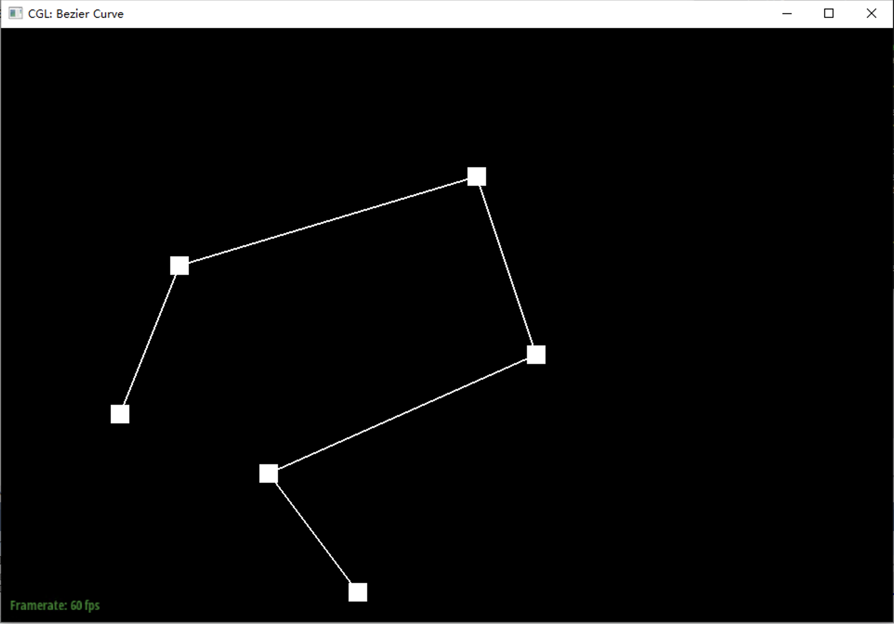
Show screenshots of each step / level of the evaluation from the original control points down to the final evaluated point. Press E to step through. Toggle C to show the completed Bezier curve as well.
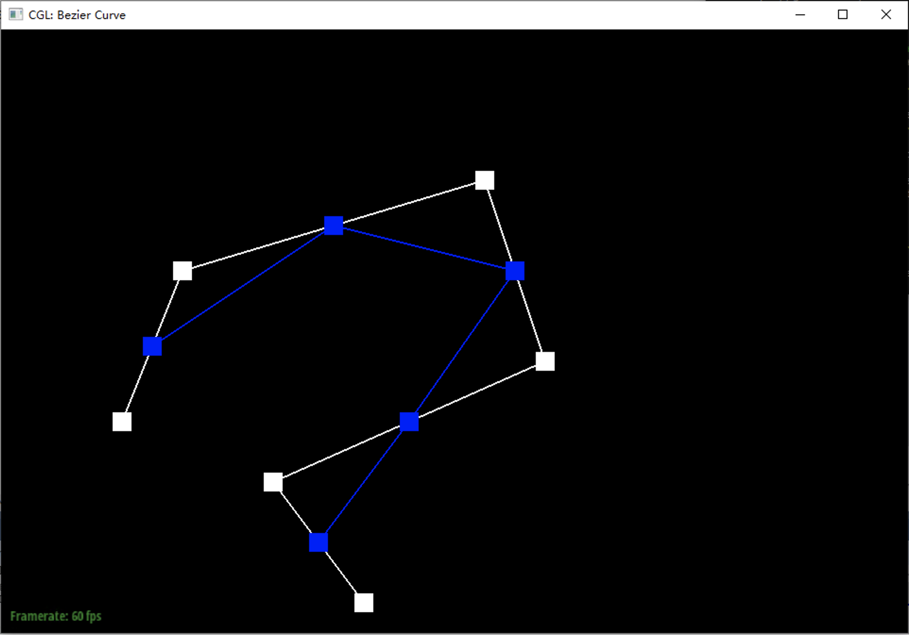
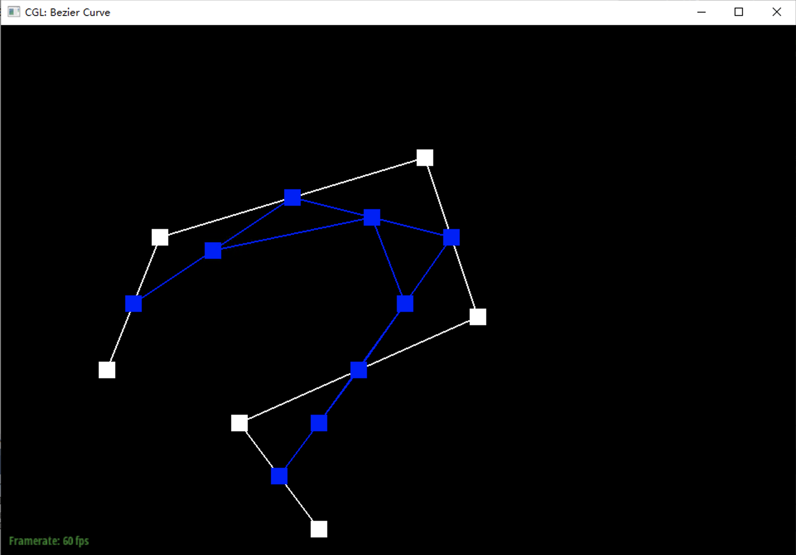
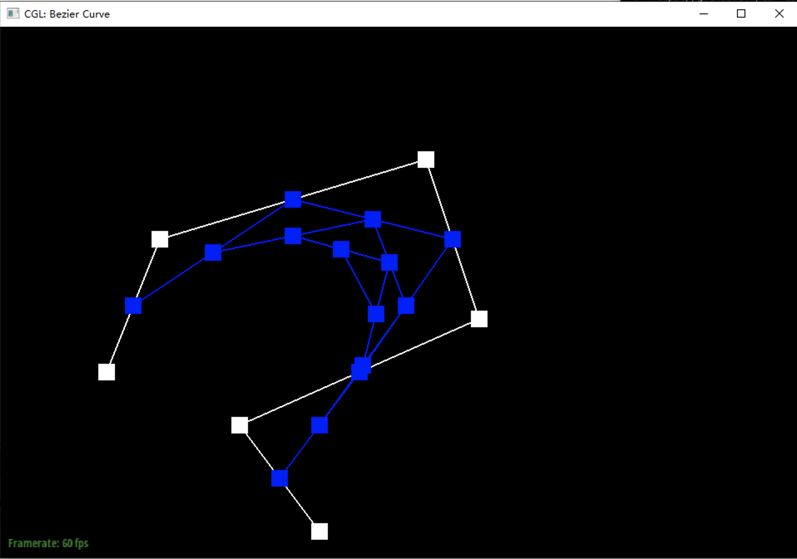
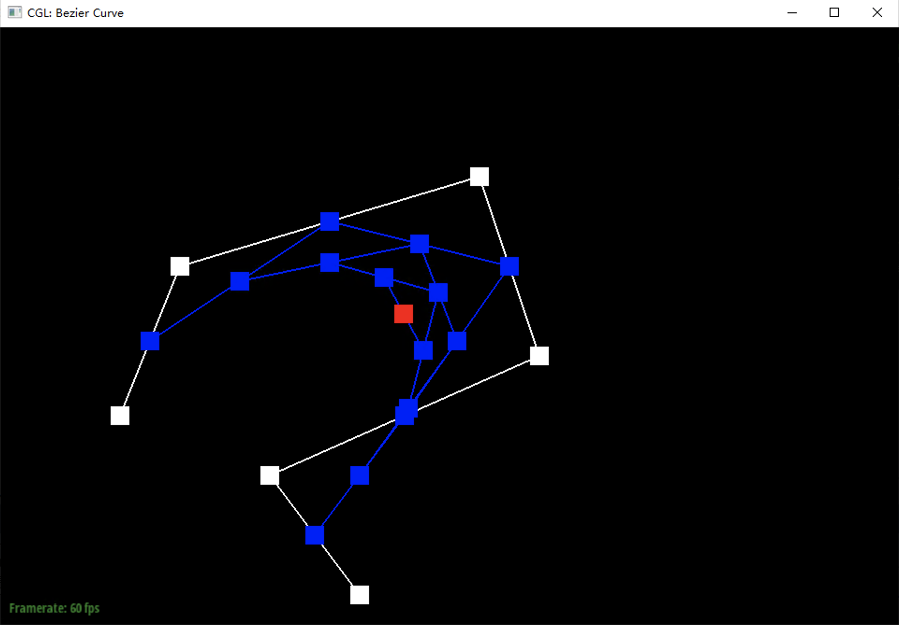
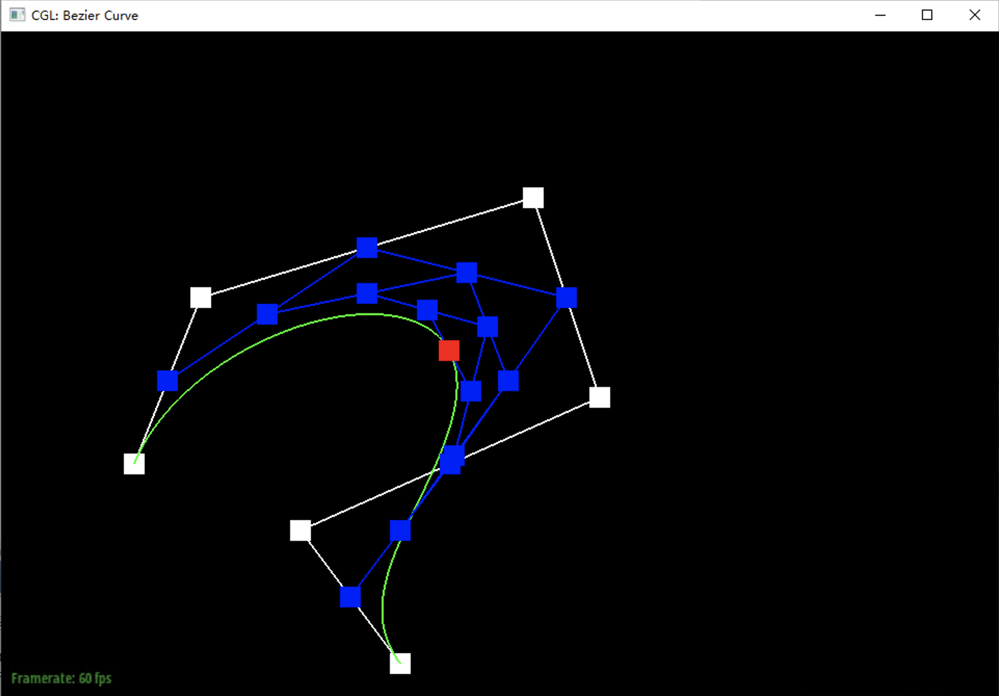
Show a screenshot of a slightly different Bezier curve by moving the original control points around and modifying the parameter via mouse scrolling.
Briefly explain how de Casteljau algorithm extends to Bezier surfaces and how you implemented it in order to evaluate Bezier surfaces.
When the algorithm extended to Bezier sufaces, the surface was viewed as several rows of the points. Then for each row of the points, a 3D de Casteljau algorithm was performed. As aresult, only one calculated point for each row of raw data points. Then, the de Casteljau algorithm was further perfomed on this new generated row of points.
In BezierPatch::evaluateStep, similar to the evaluateStep in 2D, the only difference here is that the input becomes a 3D vector.
In BezierPatch::evaluate1D, the function takes a vector of size 3D vectors, and operates the evaluateStep times on them, finally returns a 3D vector.
In BezierPatch::evaluate, the function takes all the points () and calls BezierPatch::evaluate1D times, generating 3D vectors (here previosuly used t is rename as u on row direction). Then, based on these newly gained 3D vectors, BezierPatch::evaluate1D is performed one more time with v which is rename for the 't' previously used on the column direction.
Show a screenshot of bez/teapot.bez (not .dae) evaluated by your implementation.
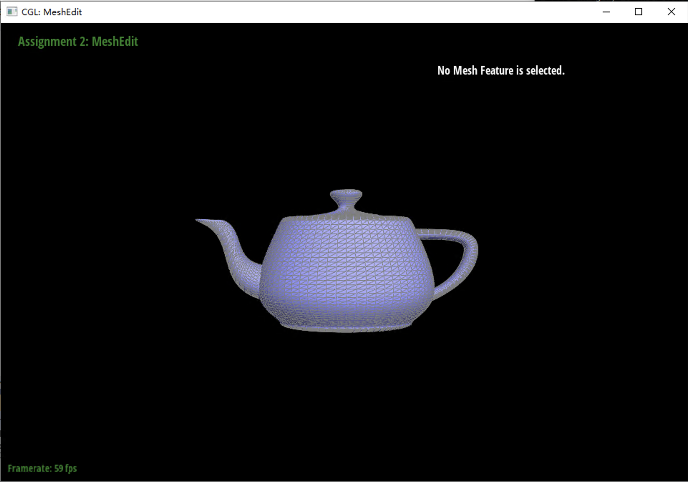
Briefly explain how you implemented the area-weighted vertex normals.
In the part, triangles iterated through halfeges given a common point. Then use cross product to calculate the norm direction and with its area of as length. At the very end, return the normlized vector.
In Vertex::normal, given a half edge, we define its original point as common points. Then, we iterate throught the triangle around the common points by a do...while with a terminated condition new half edge == initial given half edge . With two half edges in a triangle, two vectors start from the common point can be calculated. With these two vectors' cross prudct, a normal line with norm equals to the area of the triangle will be gained. Sum all these normal vector with area as its norm, and then do normalization, an area weighted normal is attained.
Show screenshots of dae/teapot.dae (not .bez) comparing teapot shading with and without vertex normals. Use Q to toggle default flat shading and Phong shading.
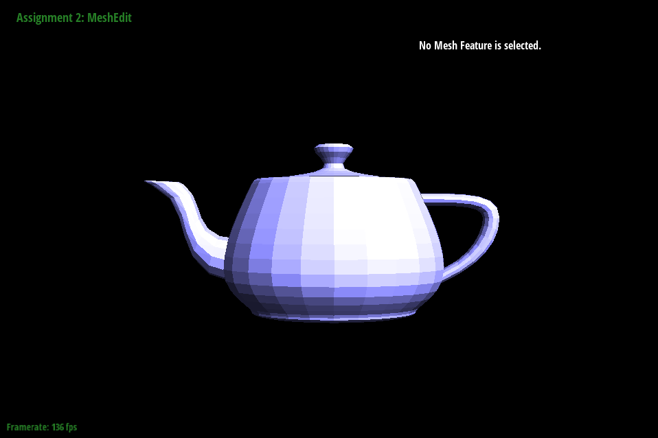
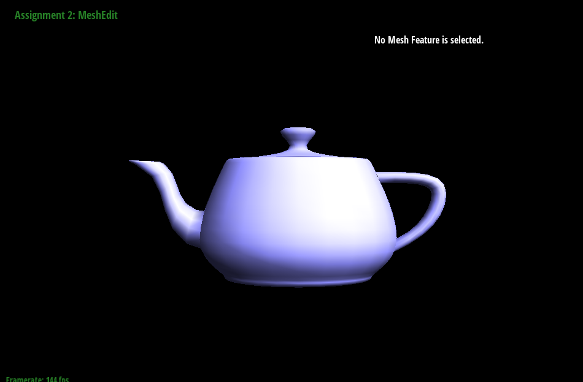
Briefly explain how you implemented the edge flip operation and describe any interesting implementation / debugging tricks you have used.
Firstly, two faces were defined by the two halfedges on two sides of the given edge. Then, take two times ->next() of the helfedges on two sides of the given edge, two to be connected vertices were attained. Then use setNeighbors(...) for the two halfedges on two sides of the given edge. Lastly, set the order and faces of all other halfedges. Also, do not forget to proper halfedge to those vertices and faces.
Show screenshots of the teapot before and after some edge flips.
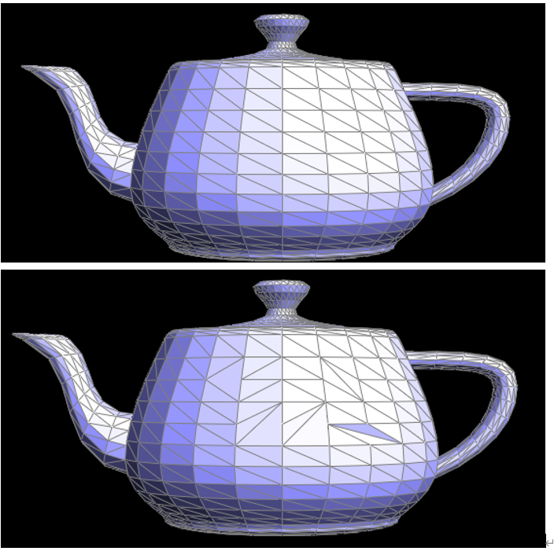
Write about your eventful debugging journey, if you have experienced one.
Indeed, in the code we forgot to reset the halfedge of the vertex being changed, say . We did not realize the existence of the problem until in part 5 we tested part 4 and part 5 together. We originally thought the problem was in part 5; however, after 30 minutes debugging, we found that part 4 lacks of vertices resetting. Fianlly, the bug was found.
Briefly explain how you implemented the edge split operation and describe any interesting implementation / debugging tricks you have used.
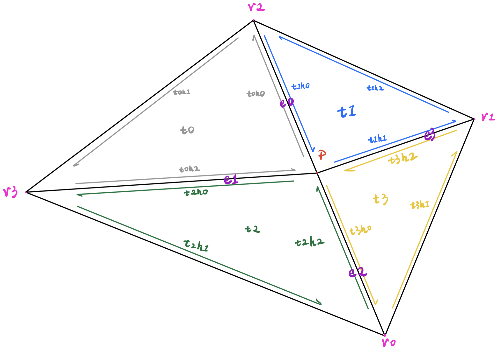
This part was basically implemented according to this hand-drawing diagram. Given , the new vertex was the average of and . In total, two new faces, three new edges, and six new halfedges was initialized. Assign the 4 edges on the circum of the quadrilateral to be the name in the diagram. Then, set all 12 halfedges correctly. Do not forget to set a proper halfedge to all 5 vertices and 4 faces. Finally, return vertex .
Show screenshots of a mesh before and after some edge splits.
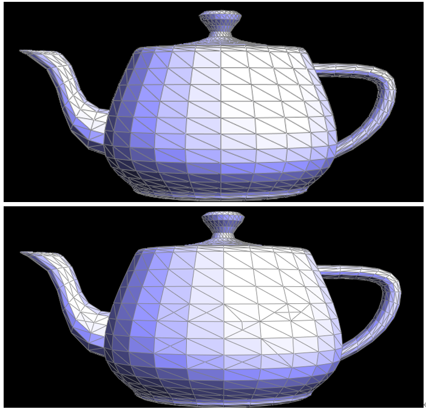
Show screenshots of a mesh before and after a combination of both edge splits and edge flips.
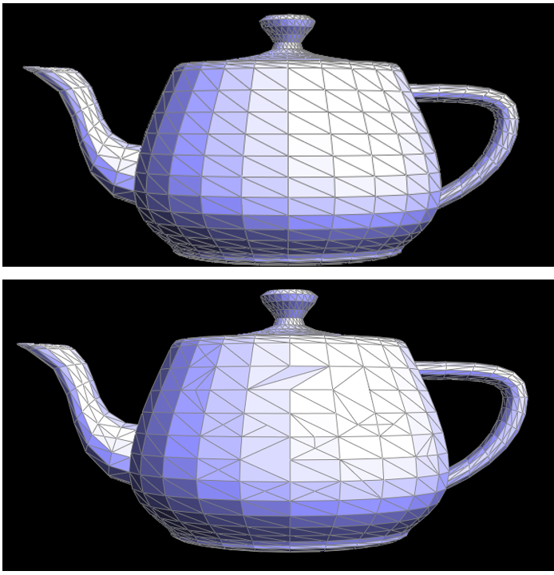
Write about your eventful debugging journey, if you have experienced one.
In this part, part 4 and part 5 were tested together. However, that first split three adjacent triangles then flip the middle edge did not form a larger triangle, but only resulted in many many small triangles without any pattern. After half an hour debugging, the bug was found in part 4 (Details already mentioned in Part 4 debugging).
If you have implemented support for boundary edges, show screenshots of your implementation properly handling split operations on boundary edges.
We did not implement this.
Briefly explain how you implemented the loop subdivision and describe any interesting implementation / debugging tricks you have used.
As instructed in the comments, I first compute the new positions for all vertices in the mesh with the given formula, then setting all their isNew flags to be false; then I use another iterator for loop to loop through all the edges and compute their new edges, and store all the edges into a vector for step 3. At step 3, I iterate through all edges stored in the previous vector(I cannot use a for loop because calling splitEdge on the current edge seems to change the iterator), and call splitEdge on these edges and mark edges with isNew flags.
In the last, I just iterate through all the edges and for all the new edges, if they are connecting a new and an old vertex, I will flip the edge. Finally, we just copy the vertices' new positions in newPosition to the position field.
Take some notes, as well as some screenshots, of your observations on how meshes behave after loop subdivision. What happens to sharp corners and edges? Can you reduce this effect by pre-splitting some edges?
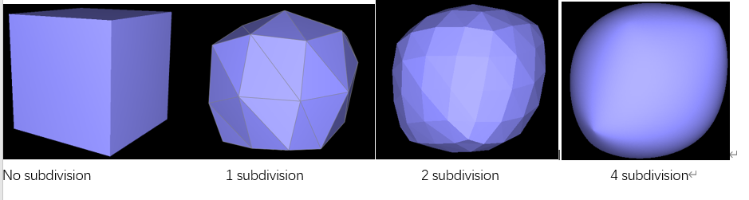
Each individual face becomes very small after few upsamplings, and the sharp corners and edges become much smoother(I still chose an angle that makes the corner clearer even after 4 subdivisions) as shown in the screenshots above.
To reduce oversmoothing(how I call it), I did a few pre-splittings on edges around one corner, and we clearly see that even after 4 subdivisions the corner is still sharp compare to other parts of the cube.
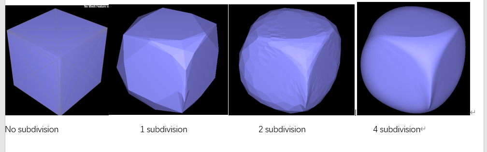
dae/cube.dae. Perform several iterations of loop subdivision on the cube. Notice that the cube becomes slightly asymmetric after repeated subdivisions. Can you pre-process the cube with edge flips and splits so that the cube subdivides symmetrically? Document these effects and explain why they occur. Also explain how your pre-processing helps alleviate the effects.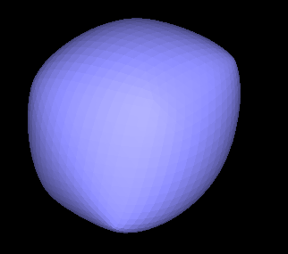
We see the cube becomes asymmetric after some subdivisions. It's because the original triangle distribution on the cube is not asymmetric, if I split every diagonal edge on each surface of the original cube(as the left part of the image), then I can get a symmetric upsampled cube even after 3 subdivisions. This is because all the vertices, triangles, and edges are symmetric after preprocessing.
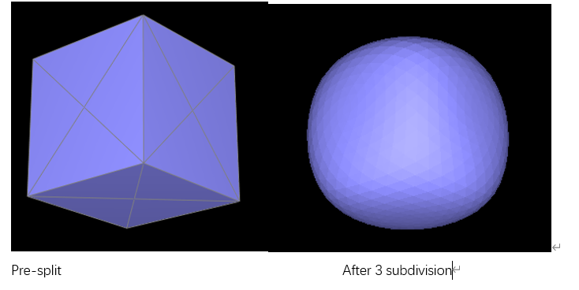